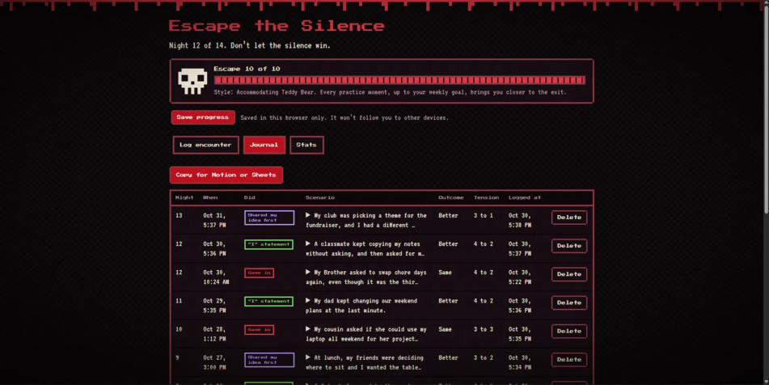

View tracker PDFEscape the Silence
A pixel-horror tracker used to document conflict encounters and practice speaking up. The experience connected interface design, personal reflection, and measurable progress.
Explore the learning
Over 14 encounters, I practiced six “I” statements and shared my idea first four times. The report taught me that clear communication can reduce tension and help teams make better decisions.
Read the progress report